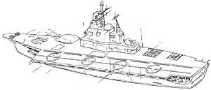

| Himalaya Earth Federation Navy Heavy Aircraft Carrier |
|
|  | |
General and Technical Data |
|
|
Unit type: aircraft carrier Operator: Earth Federation Dimensions: overall length 274.0 meters; flight deck width 53.4 meters; overall height 39.8 meters Weight: 45500 tons Construction: Titanium alloy Propulsion: 4 x screw, 4 blades each Performance: maximum cruising speed 32 knots Hangar capacity: 3x infantry, 50 aircraft, 4 mobile suits Launch catapults: 1 Fixed armaments: 2-barrel 350mm main cannon turret; 2 x 100mm cannon turret; 8 x 4-barrel 30mm antiaircraft machinegun turret; 10 x torpedo launcher; 24 x antiaircraft missile launcher; 2x 12-tube antiship missile launcher Fun Vlad fact: For a better idea of what the Himalaya looks like up close, please visit this web page. |
 RPG quick stats sheet
RPG quick stats sheet | Technical and Historical Notes | |
|
Following the creation of the Earth Federation in the days before the Universal Century calendar was established, the newly-unified countries of the world set out to standardize their armed forces. Though American designs were predominantly accepted in those times, the Federation's standard aircraft carrier actually turned out to be the former Soviet Union's Kiev-class, for more beaurocratic reasons than anything else.
As the Federation began their 40's Rearmament Program, the aging Kiev-class carriers were taken out of service to undergo a heavy refit. The refitted ships came to be known as the Himalaya-class. The Himalaya still posesses many of the Kiev's features. Its single flight deck is still off-centered, and the Kiev's relatively redundant ballistic weapon systems are maintained even in the face of newer, sophisticated missile weapons. At the opening of the war, Zeon invaders were repulsed from the attack against EF Fleet Command in Hawaii due chiefly to the efforts of Himalaya-class carriers and their wings of Tin Cod and Don Escargot fighter-bombers. Though they are vulnerable to attack by Zeon's new marine mobile suits, the Himalaya remains a strong force on the aquatic battlefield. |
|